|
ПРЕСС-КОНФЕРЕНЦИИ УЧАСТНИКОВ ФОРУМА МАСТЕРСКАЯ МОЛОДЕЖНОЙ РЕЖИССУРЫ (ПОКАЗ ОТРЫВКОВ) ЧИТКИ ПЬЕС МОЛОДЫХ ДРАМАТУРГОВ |
| 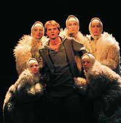 |
Национальный академический драматический театр имени Янки Купалы (Минск) Якуб Колас "СЫМОН-МУЗЫКА" мистерия в 2-х действиях (2 ЧАСА 25 МИНУТ С АНТРАКТОМ) Автор сценической версии и режиссер-постановщик НИКОЛАЙ ПИНИГИН Художник АЛЕСЯ СНОПОК-СОРОКИНА Композитор АНДРЕЙ ЗУБРИЧ Пластика ПАВЛА АДАМЧИКОВА Вопросы к себе и миру не дают покою Сымону. Не случайно он ищет счастье по свету, но нигде подолгу не задерживается. Не случайно не может терпеть хамства и рабства. Не случайно — душой соединяется с природой и обретает над ней магическую власть. Знак равенства между силами природы и силой таланта художника — это то, что отличает трактовку Н.Пинигиным «Сымона-музыки». |
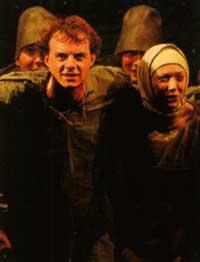 |
| 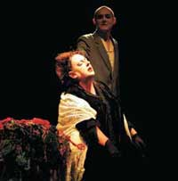 |
ТЕАТР ИМЕНИ В.БОГУСЛАВСКОГО (КАЛИШ, ПОЛЬША) С.Виткевич "КУХОННАЯ ДРАМА" кухонная драма в 1-м действии (1 ЧАС) АВТОР МАРТИН БОРТКЕВИЧ РЕЖИССЕР СТАНИСЛАВ ОТТО МЕДЗЕВСКИЙ Из пьесы классика польской драматургии Станислава Виткевича вычленен мотив болезненных взаимоотношений матери и сына. Их страсть, склонность к вредным привычкам, нездоровым побуждениям, смена настроений, непреодолимая тяга друг к другу — словно две стороны одной медали. Это любовь и ненависть, роковая зависимость и полное ее отрицание. |
| 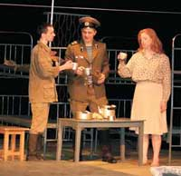 |
НОВЫЙ ХУДОЖЕСТВЕННЫЙ ТЕАТР (ЧЕЛЯБИНСК, РОССИЯ) ВЛАДИМИР ЖЕРЕБЦОВ "ЧМОРИК" АРМЕЙСКИЙ ТРАГИФАРС В 2-ДЕЙСТВИЯХ (2 ЧАСА 30 МИНУТ С АНТРАКТОМ) РЕЖИССЕР ЕВГЕНИЙ ГЕЛЬФОНД ХУДОЖНИК ВЯЧЕСЛАВ ХАРЮШИН Спектакль затрагивает армейские проблемы, но прежде всего он о том, как в подобных условиях не сломаться, сохранить себя. Воскрешает подзабытую веру в добро, в человека, в его способность к духовному возрождению. |
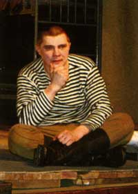 |
| 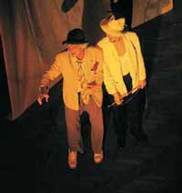 |
ТЕАТР ИМЕНИ ЛЕСЯ КУРБАСА (ЛЬВОВ, УКРАИНА) СЭМЮЭЛЬ БЕККЕТ "В ОЖИДАНИИ ГОДО" СПЕКТАКЛЬ В 2-Х ДЕЙСТВИЯХ (2 ЧАСА 30 МИНУТ С АНТРАКТОМ) РЕЖИССЕРСКАЯ ПРОВОКАЦИЯ АЛЕКСЕЯ КРАВЧУКА ХУДОЖНИК-СЦЕНОГРАФ ВЛАДИМИР КАУФМАН ХУДОЖНИК ПО КОСТЮМАМ НАТАЛИЯ ШИМИН ХУДОЖНИК ПО СВЕТУ ПЕТРО ГУМЕНЮК О чем угодно ставят «В ожидании Годо» — о чудаках, дураках, философах. Курбасовцы поставили и сыграли… о себе. Об актерах. О говорливых, суетливых и непоседливых лицедеях, жонглирующих напрасными словами и ненужными предметами. Чуть-чуть, и получился бы форменный цирк. Но у них есть чутье, когда нужно вовремя остановиться, удерживая баланс комического и трагического. |
| 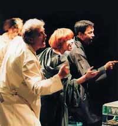 |
КИЕВСКИЙ ТЕАТР «СУЗІР’Я» (УКРАИНА) "КОНЕЦ ПРЕКРАСНОЙ ЭПОХИ" спектакль в стиле кабаре 60-х гг. в 1-м действии (1 ЧАС 20 МИНУТ) ПОСТАНОВОЧНО-ИСПОЛНИТЕЛЬСКАЯ ГРУППА: ИГОРЬ СЛАВИНСКИЙ, ИРИНА КАЛАШНИКОВА, СЕРГЕЙ МЕЛЬНИК, ЕКАТЕРИНА ТЫЖНОВА, ЕЛЕНА ДАНЬШИНА ХУДОЖНИК ПО КОСТЮМАМ НАДЕЖДА КУДРЯВЦЕВА Спектакль создан на основе произведений И.Бродского, И.Ратушинской, А.Галича и бардовских песен. И хотя нельзя дважды войти в одну и ту же реку, в театре возможно все. Будто в свое прошлое шагнет герой, вышедший из зрительного зала в молодость. |
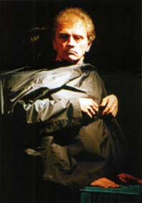 |
| 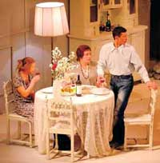 |
РУССКИЙ ДРАМАТИЧЕСКИЙ ТЕАТР ЛИТВЫ (ВИЛЬНЮС) ЖАН-МАРИ ШЕВРЕ "ПРИВЕТ, ЭМИГРАНТЫ!" СПЕКТАКЛЬ В 2-Х ДЕЙСТВИЯХ (2 ЧАСА 30 МИНУТ С АНТРАКТОМ) РЕЖИССЕР МИХАИЛ ПОЛИЩУК (ФРАНЦИЯ) СЦЕНОГРАФ АРТУРАС ШИМОНИС ХУДОЖНИК ПО КОСТЮМАМ ЙОЛАНТА РИМКУТЕ «Скват» в переводе с английского означает самовольное вселение в пустующий дом. Родиной этого явления принято считать Америку, но и в других странах подобные случаи не редкость. Вот и в Париже двум бедным молодым людям — польке и арабу, родившемуся во Франции, —пришлось тайком поселиться под чужой крышей. Но внезапно возвратившиеся владельцы жилья застают их врасплох... |
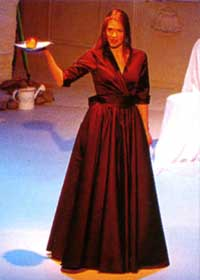 |
| 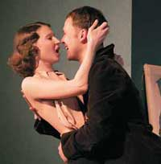 |
ТЕАТРАЛЬНО-КУЛЬТУРНЫЙ ЦЕНТР ИМЕНИ В.МЕЙЕРХОЛЬДА (МОСКВА, РОССИЯ) ГЕНРИК ИБСЕН "ГЕДДА ГАБЛЕР" ДРАМА В 2-Х ДЕЙСТВИЯХ (2 ЧАСА 20 МИНУТ С АНТРАКТОМ) РЕЖИССЕР ИРИНА КЕРУЧЕНКО ХУДОЖНИК МАРИЯ УТРОБИНА КОСТЮМЫ ЕВГЕНИЯ САМСОНОВА CВЕТ ВЛАДИСЛАВ КАПТУР ЗВУК ОЛЬГА ТОМЕНКО Гордая осанка, презрение не просто к филистерству, но вообще ко всякой житейской слабости, а в конечном итоге и к жизни как таковой, — вот что определяет героиню этого спектакля. При этом — ни одной внешне резкой интонации и идеально ледяное обхождение с окружающими. |
| 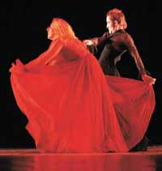 |
НАЦИОНАЛЬНЫЙ АКАДЕМИЧЕСКИЙ ДРАМАТИЧЕСКИЙ ТЕАТР ИМЕНИ ЯКУБА КОЛАСА (ВИТЕБСК, БЕЛАРУСЬ) "МЫЛЬНАЯ ОПЕРА" пластический спектакль в 1-м действии (40 МИНУТ) АВТОР И РЕЖИССЕР-ПОСТАНОВЩИК ДИАНА ЮРЧЕНКО «Мыльная опера» — сладкий, приторный жанр. Ее зрители пытаются спрятаться от реального мира за шаблонными историями стандартных персонажей. Но исследовать специфику «народного» жанра берутся Диана Юрченко и молодые актеры Национального театра имени Якуба Коласа. В центре внимания — жизнь обычного человека. Он молод, честолюбив, сексуален и полон надежд. Мир Героя наполнен музыкой, которая не знает одиночества. На звуки музыки в его дом приходят Любовь, Страсть, Друзья, Случайные люди... |
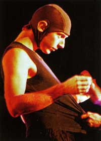 |
| 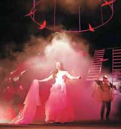 |
КИЕВСКИЙ ГОСУДАРСТВЕННЫЙ ТЕАТР ДРАМЫ И КОМЕДИИ НА ЛЕВОМ БЕРЕГУ ДНЕПРА (УКРАИНА) ЭДМОН РОСТАН "СИРАНО ДЕ БЕРЖЕРАК" СПЕКТАКЛЬ В 2-Х ДЕЙСТВИЯХ (2 ЧАСА 30 МИНУТ С АНТРАКТОМ) РЕЖИССЕР И АВТОР СЦЕНИЧЕСКОЙ РЕДАКЦИИ АНДРЕЙ БИЛОУС ХУДОЖНИК ОЛЕГ ЛУНЕВ ПЛАСТИЧЕСКОЕ РЕШЕНИЕ ЛЬВА СОМОВА МУЗЫКАЛЬНОЕ РЕШЕНИЕ АЛЕКСАНДРА КУРИЯ ХУДОЖНИК ПО СВЕТУ ТАТЬЯНА КИСЛИЦКАЯ Тон трагедии задан с первых сцен спектакля: словно плененный зверь, Бержерак мечется вдоль металлических прутьев декорации. Словно за львом в вольере, сверху за его метаниями наблюдает комментирующая «публика». Сила притяжения Вселенной по имени Бержерак такова, что мало-помалу все другие планеты — Роксана и Кристиан, да и остальные второстепенные персонажи, — подчиняются законам «его» трагической, философской реальности. |
| 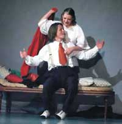 |
ЦЕНТРАЛЬНЫЙ ТЕАТР ИЗ ЭССЛИНГЕНА (ГЕРМАНИЯ) "НА ЯЗЫКЕ СТРАСТИ" музыкально-пластический спектакль-балет о любви Айседоры Дункан и Сергея Есенина в 1-м действии (1 ЧАС 30 МИНУТ) РЕЖИССУРА, ХОРЕОГРАФИЯ, КОСТЮМЫ И ОФОРМЛЕНИЕ СЦЕНЫ ВЛАДИМИР ХИНГАНСКИЙ Полярность взглядов и противоречие двух неординарных личностей лежат в основе этого танцевально-театрального представления. Благодаря тонкой, чуткой и в то же время до предела эмоциональной игре актеров, режиссеру-хореографу удается создать яркое, насыщенное, трогательное зрелище. Без заметного перехода слово развивается в танец, а танец находит свое эхо в слове. Это не искусство больших форм, а камерная игра искусств, где все построено не на внешних эффектах, а только на самом необходимом. |
| 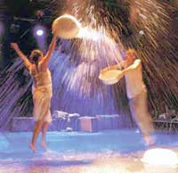 |
ГОСУДАРСТВЕННЫЙ ДРАМАТИЧЕСКИЙ ТЕАТР «ПРИЮТ КОМЕДИАНТА» (САНКТ-ПЕТЕРБУРГ, РОССИЯ) АНДРЕЙ ПЛАТОНОВ "ОДИНОКИЙ ФОКСТРОТ" музыкальная мелодрама в 1-м действии (1 ЧАС 30 МИНУТ) РЕЖИССЕР-ПОСТАНОВЩИК ВАСИЛИЙ СЕНИН БАЛЕТМЕЙСТЕР ИРИНА ЛЯХОВСКАЯ МУЗЫКАЛЬНОЕ ОФОРМЛЕНИЕ ВЛАДИМИР БЫЧКОВСКИЙ ХУДОЖНИК ПО СВЕТУ ДЕНИС СОЛНЦЕВ КОСТЮМЫ ДИЗАЙН-СТУДИЯ «ARBUS» Изысканная проза Андрея Платонова, насыщенная философскими аллюзиями, очень трудна для сцены, но молодой режиссер нашел свой ход. Время кровавых революционных перемен — это еще и время лихого фокстрота. На парадоксальном стыке этих двух вещей и выстроен спектакль. |
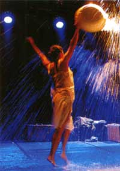 |
| 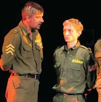 |
МОГИЛЕВСКИЙ ОБЛАСТНОЙ ДРАМАТИЧЕСКИЙ ТЕАТР (БЕЛАРУСЬ) НИЛ САЙМОН "БИЛОКСИ-БЛЮЗ" армейская история в 2-х действиях (2 ЧАСА 15 МИНУТ С АНТРАКТОМ) РЕЖИССЕР-ПОСТАНОВЩИК ВЛАДИМИР ПЕТРОВИЧ ХУДОЖНИК-ПОСТАНОВЩИК АНДРЕЙ МЕРЕНКОВ МУЗЫКАЛЬНОЕ ОФОРМЛЕНИЕ ВЛАДИМИР ПЕТРОВИЧ БАЛЕТМЕЙСТЕР НАТАЛЬЯ БЫЧЕНКОВА Конфликт сержанта Туми и записного гуманиста Эпштейна до предела обнажает глубокое противоречие: что важнее — достоинство человека или его жизнь? Какова цена чести? Совместимы ли вообще эти понятия? И не этот ли проклятый вопрос является глубинной причиной всех войн в истории человечества? |
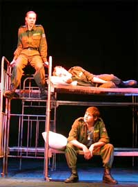 |
Во II Международном молодежном театральном форуме М.@rt.контакт приняли участие:
• Спектакль “Сымон-музыка” (Якуб Колас), Национальный академический драматический театр им. Янки Купалы (Минск, Беларусь)
• Спектакль “Чморик” (В.Жеребцов), Новый художественный театр (Челябинск, Россия)
• Спектакль «Кюхендрам» (С.Виткевич), Театр В.Богуславского (Калиш, Польша)
• Спектакль «В ожидании Годо» (С.Бекетт), Театр им. Леся Курбаса (Львов, Украина)
• Спектакль «Конец прекрасной эпохи», Киевский театр «Сузiр`я» (Киев, Украина)
• Спектакль «Привет, эмигранты!» (Ж.-М.Шевре), Русский драматический театр Литвы (Вильнюс, Литва)
• Спектакль «Геда Габлер» (Г.Ибсен), Театрально-культурный центр им. В.Мейерхольда (Москва, Россия)
• Спектакль «Мыльная опера», Национальный академический драматический театр им. Якуба Коласа (Витебск, Беларусь)
• Спектакль «Сирано де Бержерак» (Э.Ростан), Киевский государственный театр драмы и комедии на левом берегу Днепра (Киев, Украина)
• Спектакль «Билокси-блюз» (Н.Саймон), Могилевский областной драматический театр (Могилев, Беларусь)
• Спектакль «На языке страсти», Центральный театр из Эсслингена (Эсслинген, Германия)
• Спектакль «Одинокий фокстрот» (А.Платонов), Государственный драматический театр «Приют комедианта» (Санкт-Петербург, Россия)
Официальные итоги II Международного молодежного театрального форума “М.art.контакт”:
• Лучшая мужская роль – Николай Боклан («Сирано де Бержерак»), Киевский Государственный Театр Драмы и Комедии на левом берегу Днепра.
• За яркую театральную образность – спектакль «Одинокий фокстрот» Санкт-Петербургского государственного драматического театра «Приют комедианта».
• За современное сценическое воплощение национальной классики – спектакль «Сымон-музыка» Национального Академического драматического Театра им.Янки Купалы.
• За виртуозный актерский дуэт – спектакль «Кюхендрам» театра В.Богуславского, г.Калиш, Польша.
• Специальный диплом форума за молодежный актерский ансамбль – спектакль «Билокси-блюз» Могилеского областного драматического театра.
• Гран-при форума - спектакль «В ожидании Годо» театра им.Леся Курбаса, г.Львов, Украина.
Симпатии неофициального молодежного жюри:
• РЕСПЕКТ за лучшую мужскую роль – Сын (Мартин Борткевич), спектакль «Кюхендрам» Театра В.Богуславского (г.Калиш, Польша).
• РЕСПЕКТ за лучшую женскую роль – Фрося (Софья Горелик), спектакль «Одинокий фокстрот» Санкт-Петербургского государственного драматического театра «Приют комедианта».
• РЕСПЕКТ за правду жизни – спектакль «Чморик» Нового Художественного Театра (г.Челябинск).
• РЕСПЕКТ за лучшее раскрытие молодежной темы – спектакль «Одинокий фокстрот» Санкт-Петербургского государственного драматического театра «Приют комедианта».
• РЕСПЕКТ за нездоровый оптимизм – «В ожидании Годо» Львовского театра им.Леси Курбаса.